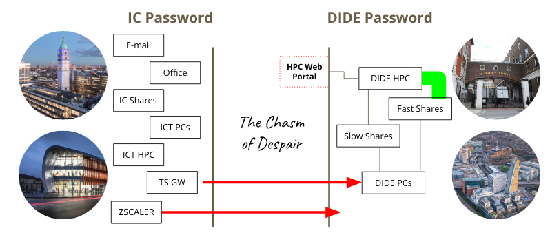

DIDE cluster
This page tries to capture information on the most common pain points people hit when first starting out.
We support one cluster at present (the so-called windows cluster) but will support more in future; in particular we aim to support a Linux cluster within DIDE, as well as submission to the the central ICT/RCS cluster. In future we may support others, but we have no immediate plans to.
In short, you will need:
- to know your DIDE username and password
- to have been added as a cluster user
- to be on the DIDE network, probably using ZScaler
- to be on a network share that the cluster can see
These are all explained in detail below.
Authentication with DIDE
After installing hipercow, try running
hipercow dide authenticate
which will ask you for your DIDE username and password.
If you hit problems, try going to mrcdata.dide.ic.ac.uk/hpc and trying a few combinations until you remember what it should be. Once done update this in your password manager (perhaps BitWarden?) so you can find it easily next time.
It is possible that you do not have access to the cluster, even if your username is correct. Try logging onto the portal; if it reports that you don't have access then please request access by messaging Wes. If you don't know your username and password, read on.
About our usernames and passwords
For historical reasons DIDE exists on its own domain (DIDE) separate from Imperial's domain (IC). This means that you may have a different DIDE username to your imperial username (though usually the same) and you may have a different password (though most people set these to be the same).
The overall situation is summarised in this infographic:

If you need to change your DIDE password you can do this from any DIDE domain machine by pressing Ctrl-Alt-Delete and following the prompts. If it has already expired, such that you can't login, you need to contact Chris or Paul.
We store credentials using the keyring package. This saves your username and password securely in your system keyring, which will be unlocked on login for at least Windows and macOS. You will need to rerun hipercow dide authenticate whenever you change your DIDE password.
The username and password that you might have submitted with the R version of hipercow are not currently visible to the Python version, but we hope to address this soon.
Networks
Ensure you have connected to the DIDE network by using ZScaler; see instructions from ICT, or by being on a desktop PC or virtual machine within the building that is plugged in by Ethernet (this is less common now).
Filesystems and paths
For anything to work with hipercow on the DIDE cluster, your working directory must be on a network share. If you are not sure if you are on a network share, then run
pwd
Interpreting this depends on your platform (the machine you are typing commands into):
- Windows: A drive like
C:orD:will be local. You should recognise the drive letter as one likeQ:that was mapped by default as your home orM:that you mapped yourself as a project share. - macOS: The path will likely be below
/Volumes(but not one that corresponds to a USB stick of course!) - Linux: The path should start at one of the mount points you have configured in
/etc/fstabas a network path.
Project shares and home directories
In general we strongly recommend that you use project shares for any serious work, rather than your home directory. To organise these you should talk to your PI (or if you are a PI, talk to Chris). The advantages of the project shares are that they are larger (so you will run out of disk space more slowly) and faster than the home shares. If you launch many tasks at once that use your home share you can get unexpected failures as the disk can't keep up with amount of data being read and written. Don't use your home directory (generally Q: on windows) for anything more intensive than casual experimentation. We have seen many people with jobs that fail mysteriously on their network home directory when launched in parallel, and this is generally fixed by using a project share.
If you don't know if you have a project share, talk to your PI about if one exists. If you are a PI, talk to Chris (and/or Wes) about getting one set up.
See below about the current state of the Windows cluster, and some fast storage that you might want to use.
Mapping network drives
For all operating systems, if you are on the wireless network you will need to connect to the department network using ZScaler; see the ICT documentation for details. If you can get on a wired network you'll likely have a better time because the VPN and wireless network seems less stable in general (it is not clear how this will be in the new building at White City, or indeed how many wired points there will be).
Below, instructions for setting up depend on the sort of computer you are typing commands into at the moment (not the cluster type).
Windows
If you are using a windows machine in the DIDE domain, then
your network drives are likely already mapped for you. In fact you
should not even need to map drives as fully qualified network names
(e.g. //projects/tmp) should work for you.
macOS
In Finder, go to Go -> Connect to Server... or press Command-K.
In the address field write the name of the share you want to
connect to. You will likely want to mount:
smb://qdrive.dide.ic.ac.uk/homes/<username>
which is your home share.
At some point in the process you should get prompted for your username and password, but I can't remember what that looks like.
This directory will be mounted at /Volumes/<username> (so the last bit of the filename will be used as the mount point within Volumes). There may be a better way of doing this, and the connection will not be reestablished automatically so if anyone has a better way let me know.
Linux
This is what Rich has done on his computer and it seems to work, though it's not incredibly fast. Full instructions are on the Ubuntu community wiki.
First, install cifs-utils
sudo apt-get install cifs-utils
In your /etc/fstab file, add
//qdrive.dide.ic.ac.uk/homes/<dide-username> <home-mount-point> cifs uid=<local-userid>,gid=<local-groupid>,credentials=/home/<local-username>/.smbcredentials,domain=DIDE,sec=ntlmssp,iocharset=utf8,mfsymlinks 0 0
where:
<dide-username>is your DIDE username without theDIDE\bit.<local-username>is your local username (i.e.,echo $USER).<local-userid>is your local numeric user id (i.e.id -u $USER)<local-groupid>is your local numeric group id (i.e.id -g $USER)<home-mount-point>is where you want your DIDE home directory mounted
please back this file up before editing.
So for example, I have:
//qdrive.dide.ic.ac.uk/homes/rfitzjoh /home/rich/net/home cifs uid=1000,gid=1000,credentials=/home/rich/.smbcredentials,domain=DIDE,sec=ntlmssp,iocharset=utf8 0 0
The file .smbcredentials contains
username=<dide-username>
password=<dide-password>
and set this to be chmod 600 for a modicum of security, but be
aware your password is stored in plain text.
This set up is clearly insecure. I believe if you omit the credentials line you can have the system prompt you for a password interactively, but I'm not sure how that works with automatic mounting.
Finally, run
sudo mount -a
to mount all drives and with any luck it will all work and you don't have to do this until you get a new computer.
If you are on a laptop that will not regularly be connected to the internal network, you might want to add the option noauto to the above
//qdrive.dide.ic.ac.uk/homes/rfitzjoh /home/rich/net/home cifs uid=1000,gid=1000,credentials=/home/rich/.smbcredentials,domain=DIDE,sec=ntlmssp,iocharset=utf8,noauto,mfsymlinks 0 0
and then explicitly mount the drive as required with
sudo mount ~/net/home
Working on a network share
The virtual environment you create on your share is different to the one that your jobs will use. You can install hipercow into this virtual environment:
python -m venv env
. env/bin/activate # or env\Scripts\activate on Windows
pip install hipercow
This might be quite slow in practice, as loading python modules from the network filesystem is a bit painful.
Alternatively you could install globally (e.g., with pipx).
Sometimes creating a virtual environment on a network share will fail
python -m venv env
Error: [Errno 5] Input/output error: 'lib' -> '/home/you/net/home/path/env/lib64
This should not happen, and does not always, but you can resolve it by disabling use of symlinks:
virtualenv --copies env
It looks like this approach does not work with venv even with --copies.
Alternatively (if on Linux), check to see if the mfsymlinks option is in your /etc/fstab entry; this was not included in previous versions of our instructions. Remount your home directory and try again.
Python versions
By default, we try and run the version of python on the cluster that you are running locally, to the minor version level. So if you are running any version of 3.13 (e.g., 3.13.2) we will use a version of 3.13 for your jobs. It is not possible to set the patch version and usually it does not matter. We'll try and keep the versions on the cluster up to date.
You can select the python version that will be run on the cluster by passing --python-version through to hipercow driver configure, for example:
hipercow driver configure dide-windows --python-version=3.11
will use python version 3.11 regardless of what your local version of python is. This might be useful if you need to run software that depends on an older version of python.